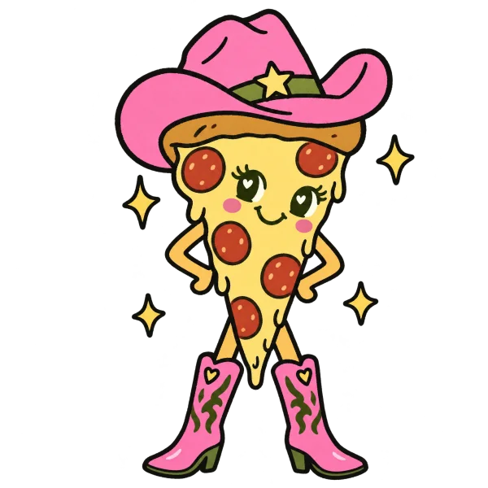
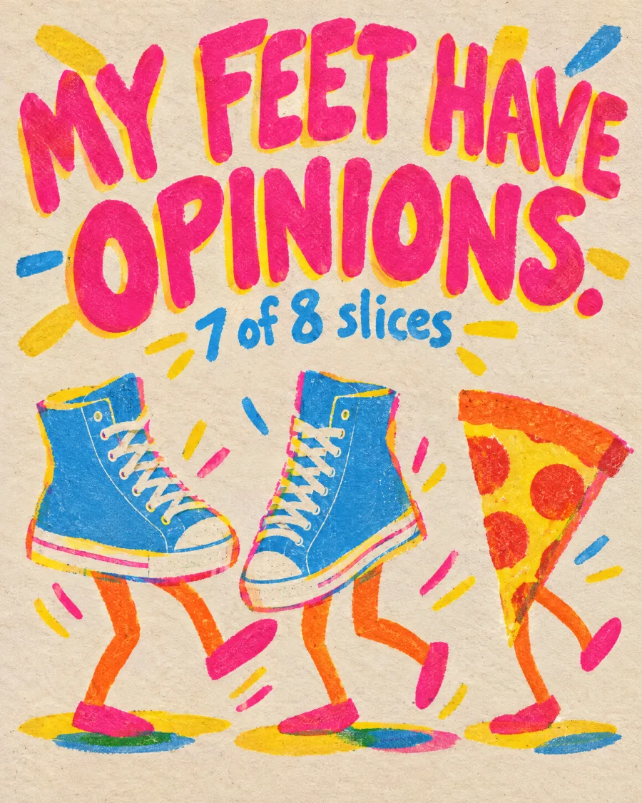
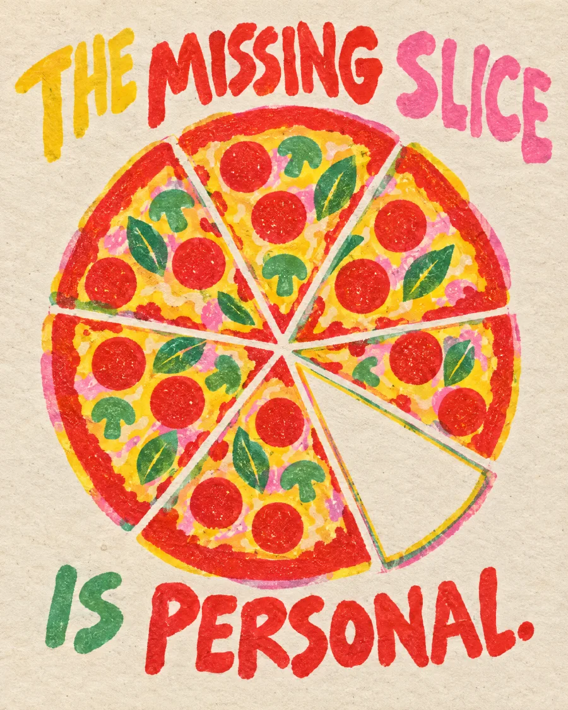
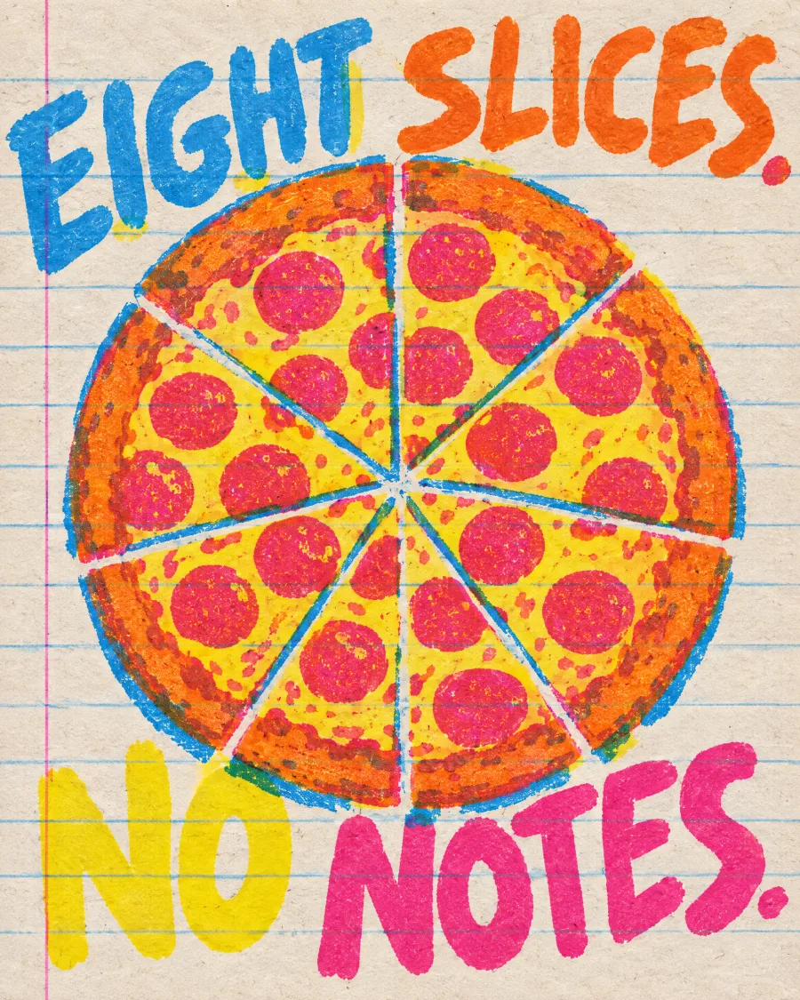
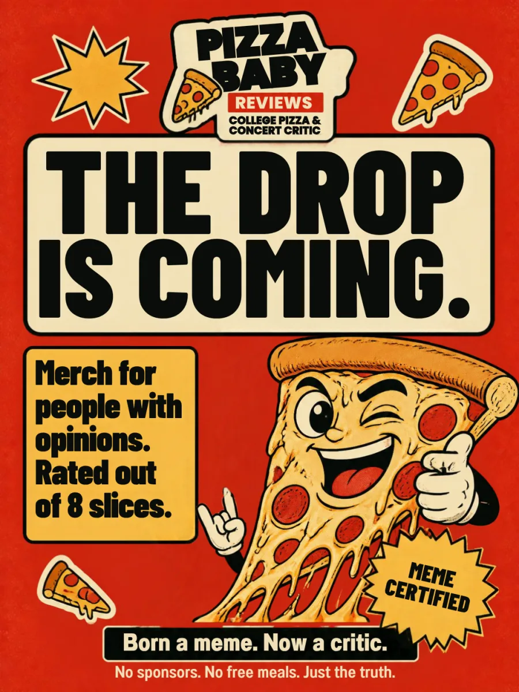

Concert, NRG Stadium, Houston
Taylor Swift, The Eras Tour
🍕🍕🍕🍕🍕🍕🍕🍕
I have been to a lot of concerts. I have never been to anything like this. I don't give 8 slices lightly. This one was never in question.
The Original, Since 2009
the pizza baby diaries
As a newborn, my photo went viral, except they replaced me with a pizza slice. Honestly? Iconic. Now I review the food that replaced me.
Latest: Laufey, 8 of 8 "I was not prepared. I thought I was prepared. I was not."
A gift concept from Gordon's team for Sofia. Her published verdicts, our proposed design.

 day one. already iconic.dear diary: still iconic.
day one. already iconic.dear diary: still iconic.
MEMERated in slices, 8 is a whole pizza
Concert, NRG Stadium, Houston
I have been to a lot of concerts. I have never been to anything like this. I don't give 8 slices lightly. This one was never in question.
Album, Everywhere
ABBA made their best album when they had nothing left to lose and everything to process. This one deserved better from history and I'm correcting the record.
Concert, Toyota Center, Houston
Her voice is the production. Eight slices. No notes. Houston showed up.
Concert, Moody Center, Austin
Seven slices. The missing slice is the drive back on I-10 at midnight.
Concert, Toyota Center, Houston
I was not prepared. I thought I was prepared. I was not.
Concert, 713 Music Hall, Houston
This is either the most on-brand thing I've ever done or a cry for help. Probably both.
Album, Everywhere
Seven slices. The missing one is because I needed more.
Pizza spot, Houston, TX
The margherita is the move. Don't overthink it. Seven slices. The missing one is because I had to share and I didn't want to.
Concert, Aragon Ballroom, Chicago
One slice off because the opener ran 20 minutes over and I was standing the whole time. My feet have opinions.
From pizzababyreviews.com, as published. Eight slices is a whole pizza: the highest honor there is.
Starter verdicts in her format, not real reviews
Dining hall, Tuesday
The cheese had given up before I got there. The crust had not, and I respect a crust that shows up for work. Five slices. Three of them are for the crust's attitude.
Late night, 1:14 a.m.
I didn't choose this slice. It chose me, at a moment of weakness and a quarter tank. Six slices. Two are pure gratitude.
Taste test, Dorm microwave
The box promised a rising crust. Nothing rose. Not the crust, not my spirits. Three slices, and one of them is for the box art.
Written by Gordon's team in her style as templates for college-life reviews. Every score is out of 8 slices, the way she rates. Replace, rewrite or roast them.
Need a new obsession?
Let Pizza Baby decide.
Read the full review on pizzababyreviews.comDraft a verdict, see the card
Pizza spot
Pizza Baby
Screenshot it. Post it.
Merch concepts, preview prices, not for sale yet

The line behind the design, Chappell Roan, 7 of 8
Concept: dance-floor socks, the 8-slice scale on the sole.
"One slice off because the opener ran 20 minutes over and I was standing the whole time. My feet have opinions."
Read the review
The line behind the design, a proposal, not a quote
Concept: seven filled slices and one outlined space, as a seal for tees and stickers.
Every 7 of 8 she gives comes with a very specific reason: the I-10 drive at midnight, having to share, needing more.
Read the reviews
The line behind the design, Kacey Musgraves, 8 of 8
Concept: a notebook cover. The joke lands because the pages inside are where she writes.
"Her voice is the production. Eight slices. No notes. Houston showed up."
Read the review
Born a meme. Now a critic. Heavyweight, tomato red.

The OG 2009 seal, on black. Certified.

Unfiltered. Unapologetic. Hungry. Fits a pizza box, nearly.

No sponsors. No free meals. For your laptop and your opinions.

Hospital-blanket stripes. The hat the slice wore first.

A slice-scale pin set and the baby in the beanie. Eight slices makes a whole pizza.

Baby pink, one cowgirl slice, zero apologies.

Olive corduroy, pink script. For bad-hair verdict days.

Carries a laptop, two textbooks and one strong opinion.

The pony, the bow, the castle and the scale. Collect them all.

For posting verdicts before the cheese cools.

Holds coffee. Judges your breakfast.
These are mockups, not print-ready art, and nothing here is for sale. The bag is a preview saved only on this device, so you can feel how a drop would work. Before anything sells: final wording from Sofia, a sample order, and the real numbers.
The lore
In 2009, a photo of me as a newborn went viral, except the internet swapped me out for a pizza slice. My parents thought it was hilarious. I grew up thinking it was my destiny. Turns out, they were right.
before the pizza replaced me.
Pitch me
I'm selective. I'm honest. And I have opinions that people actually read.
The pitch box opens with the new site. Spots, shows, albums, snacks: if it deserves an opinion, it's in scope.
How this site earns, on your terms
A gift from Gordon's team: a home for your verdicts that pays for your pizza habit and builds your writing, while you're in college. Your promise stays intact: nobody can buy a verdict. These switch on whenever you want them.

0, Launch
An Instagram post for the merch drop, made in Canva and editable. Ask Gordon to share the Canva file and it's yours to tweak and post.
1, Merch
Print-on-demand (Printful or Printify into a Shopify or Big Cartel store) means no boxes of unsold hoodies. It still costs something: a sample order, store fees, and a thinner margin per piece. The designs above are concepts to choose from, then redraw as print files.
2, Newsletter
One weekly verdict by email (Beehiiv or Substack, free to start). Your readers, owned by you, not by an algorithm. Paid tiers later.
3, Tips
A Ko-fi or Buy Me a Coffee link lets fans fund the next review without anyone touching the verdict.
4, Craft
Four scores and one sentence, every time. Writing the line you'd want screenshotted is the whole skill. Practice it here.